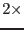

XMM-Newton Science Analysis System
slconv (slconv-2.5) [xmmsas_20170112_1337-16.0.0]
Source region shapes.
Several region shapes can be selected through parameter shape: circle, box, diamond, ellipse and boxcircle. The size of these regions is determined once the radii is calculated as explained in previous section:
- - box side =  circle_radius
- - ellipse_minor_axis= circle_radius
- - ellipse_major_axis= circle_radius
XMM-Newton SOC/SSC -- 2017-01-12